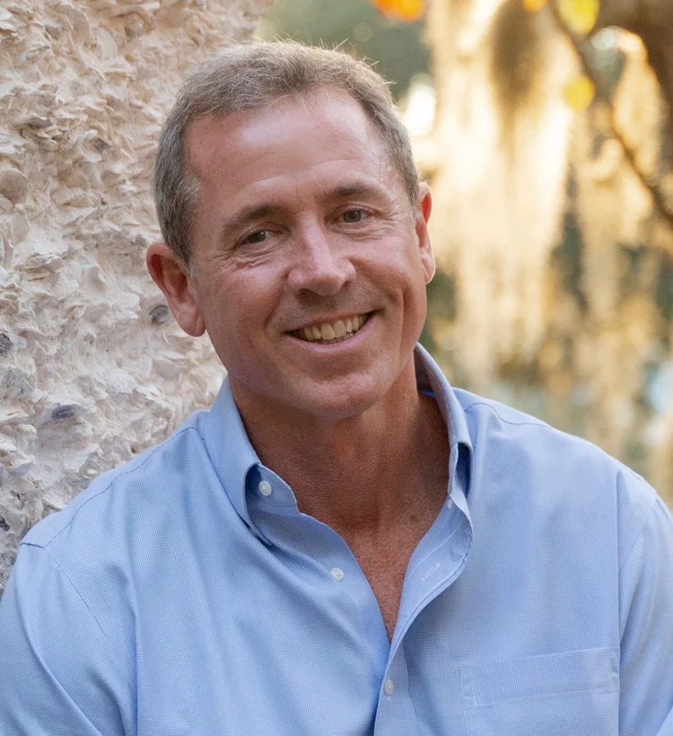
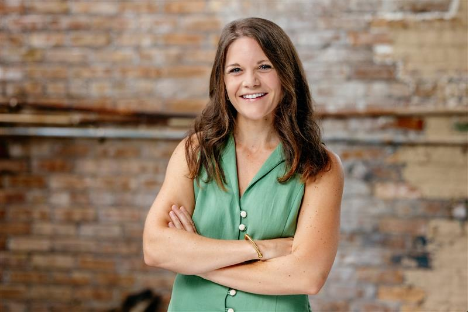
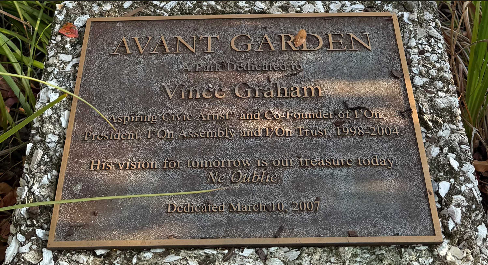

We’re situationally aware, environmentally responsive, aspiring civic artists who possess a demonstrated ability to make positive things happen.
The strategy for vision execution varies depending on time and circumstance, but often engages dozens, if not hundreds of thoughtful individuals who are inspired to leave the world a more beautiful place.

Combining modern advances with time-tested urban principles, Graham first founded the traditional walking neighborhood of Newpoint in 1991. Since that time he has participated in building seven other neighborhoods: the Village of Port Royal, Broad Street, I'On, Morris Square, Hammonds Ferry, and Mixson in South Carolina; and East Beach in Virginia.
In addition to garnering numerous design and environmental stewardship awards, these neighborhoods have also been the subject of articles and stories in The Wall Street Journal, Builder, Landscape Architecture, and National Geographic magazines, Home and Garden Television, CNN, the BBC and more.
Graham has become a passionate advocate for advancing human-scaled urbanism, and has spoken at architectural and planning symposiums in Australia, Europe, and throughout the United States.

Amanda has long been drawn to urban places that are both beautiful and deeply human in scale. Her architectural and planning experience has led to a deep understanding of placemaking, historic preservation, and adaptive reuse, with a focus on creating spaces that are thoughtful, enduring, and context-specific.
Amanda strives to shape places of enduring value and contribute to a built environment that strengthens community, reflects local character, and leaves the world more beautiful than she found it.

Interested in learning more about our projects?
contact@locisouth.com